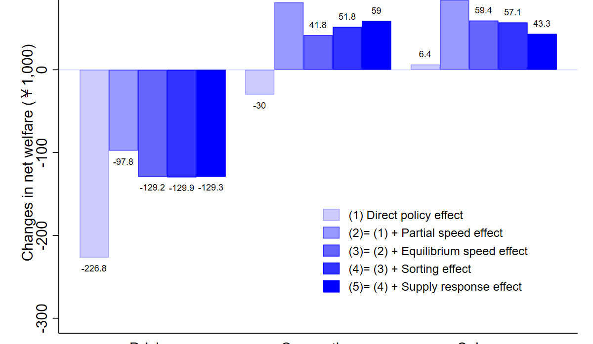
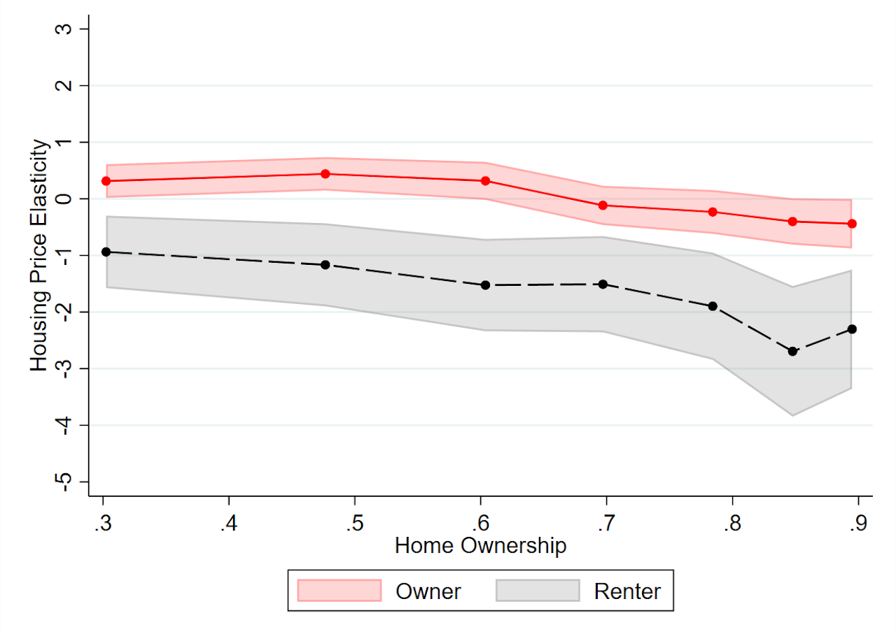
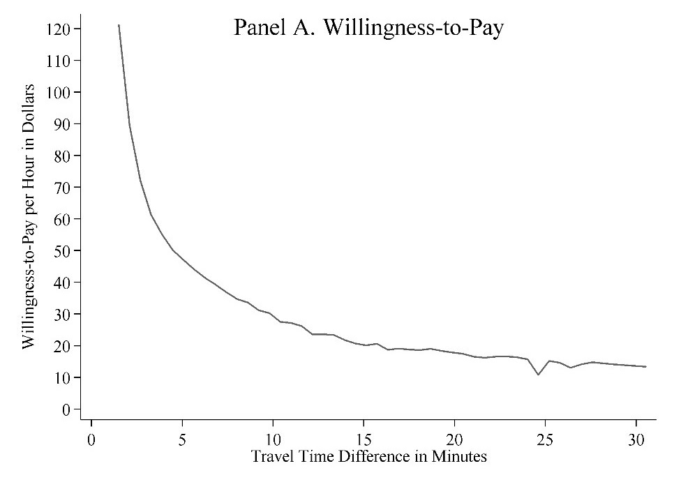
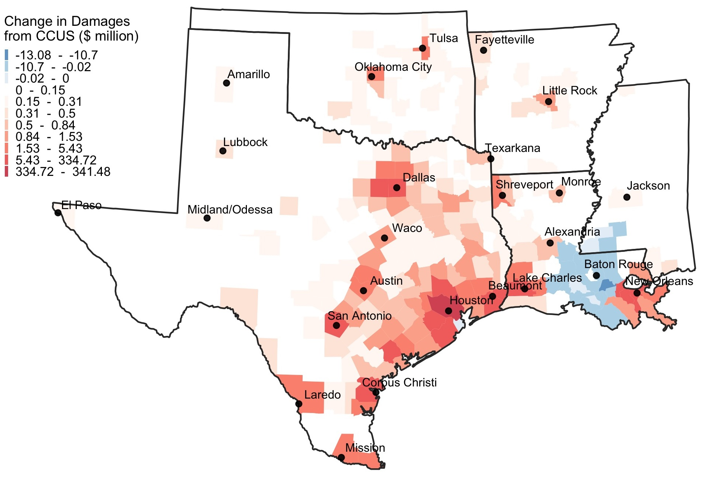

Research
Publications Link to heading
Efficiency and Equity Impacts of Urban Transportation Policies with Equilibrium Sorting Conditionally Accepted at American Economic Review Link to heading

(with Shanjun Li, Panle Barwick, Jing Wu & Tianli Xia)
We estimate an equilibrium sorting model of housing location and commuting mode choice with endogenous traffic congestion to evaluate the efficiency and equity impacts of a menu of urban transportation policies. Leveraging fine-scale data from household travel diaries and housing transaction data identifying residents’ home and work locations in Beijing, we recover structural estimates with rich preference heterogeneity over both travel mode and residential location decisions. Counterfactual simulations demonstrate that even when different policies reduce congestion to the same degree, their impacts on residential sorting and social welfare differ drastically. First, driving restrictions create large distortions in travel choices and are welfare reducing. Second, distance-based congestion pricing reduces the spatial separation between residences and workplaces and improves welfare for all households when it is accompanied by revenue recycling. Third, sorting undermines the congestion reduction under driving restrictions and subway expansion but strengthens it under congestion pricing. Fourth, the combination of congestion pricing and subway expansion delivers the greatest congestion relief and efficiency gains. It can also be self-financed, with the cost of subway expansion fully covered by congestion pricing revenue. Finally, eliminating preference heterogeneity, household sorting, or endogenous congestion significantly biases the welfare estimates and changes the relative welfare rankings of the policies.
Leveraging scale economies and policy incentives: Carbon capture, utilization & storage in Gulf clusters at Energy Policy (2021) Link to heading
(with Sean Corcoran, Andrew Robison, Ben Leibowicz, and Sheila Olmstead)
Carbon capture, utilization and storage (CCUS) represents a set of technologies essential to meeting ambitious mid-to late-century decarbonization goals. Yet deployment of CCUS has been slow, with fewer than 20 large-scale facilities operating worldwide in 2019. We estimate the total and marginal cost of constructing and operating new CCUS facilities and associated infrastructure to reduce carbon dioxide (CO2) emissions from current and planned industrial facilities on the Texas and Louisiana Gulf Coast. We compare these cost estimates to scheduled CCUS tax incentives through 2026 under section 45Q of the U.S. Internal Revenue Code to quantify cost-effective emissions abatement. Our analysis measures the cost-reducing potential of economies of scale in regional CO2 pipeline networks. We also compare CCUS costs to one measure of the benefits of carbon capture, the social cost of carbon. Results suggest that U.S. federal tax incentives currently in place through 2026 could justify between 3.3 million and 77.6 million tons of annual CCUS in the Gulf region, depending on the choice of storage technology and the degree of pipeline network coordination. Finally, we highlight several potential policy barriers that may explain low adoption of CCUS in the Gulf Region and elsewhere.
Tightening Belts to Buy a Home: Consumption Responses to Rising Housing Prices in Urban China at Journal of Urban Economics (2020) Link to heading

ungated version
(with Shanjun Li, Panle Barwick, Yuanning Liang, and Meng Zhao)
This paper measures the impact of housing price changes on household consumption at the city level using the universe of credit and debit card transactions in China from 2011 to 2013. In sharp contrast to the literature on the U.S. housing market, our analysis shows a large and negative housing price elasticity of consumption: a 10% increase in housing prices would lead to a 9.1% reduction in non-housing spending. We argue that the negative elasticity is driven by the combination of a strong investment incentive in housing and heavy borrowing constraints faced by households. This is corroborated by the finding that households increase their savings as housing prices increase. Relative to the existing literature, our analysis helps to better explain how low- and middle-income households adapt to the limited investment venues and surging housing prices in the
Emissions in the Stream: Estimating the Greenhouse Gas Impacts of an Oil and Gas Boom at Environmental Research Letters (2020) Link to heading

(with Achmad Khomaini, Benjamin Leibowicz and Sheila Olmstead)
Media: Reuters, Bloomberg, CNBC, Business Insider, Houston Chronicle, S&P Global, E&E News, AXIOS, Nasdaq, Scientific American, Texas Observer
We compile a detailed inventory of projected upstream oil and gas production expansions as well as recently and soon-to-be built midstream and downstream facilities within the region. Using data from emissions permits, emissions factors, and facility capacities, we estimate expected GHG emissions at the facility level for facilities that have recently been constructed or are soon to be constructed. Our central estimate suggests that the total annual emissions impact of the regional oil and gas infrastructure buildout may reach 541 million tons of CO2 equivalent (CO2e) by 2030, which is more than 8% of total US GHG emissions in 2017 and roughly equivalent to the emissions of 131 coal-fired power plants. Researchers have largely focused on upstream emissions such as fugitive methane (CH4) associated with new US production; our findings reveal the potentially greater prominence of midstream and downstream sources in the studied region.
Working Papers Link to heading
Avoiding Traffic Congestion Externalities? The Value of Urgency Link to heading

(with Antonio Bento and Kevin Roth) Revise and Resubmit at Journal of Political Economy Microeconomics
Taking advantage of a program that allows solo-drivers to enter ExpressLanes upon a payment of a toll, we provide the first estimates of commuters’ value of urgency, defined as a discrete amount to avoid failing on-time arrival. We provide evidence that, because commuters are schedule constrained, preferences for urgency explain about 70 percent of drivers’ willingness to pay to access these ExpressLanes. Earlier theoretical models that ignore preferences for urgency fail to fit the data and explain important empirical regularities. While the value of time and value of reliability have been commonly used for infrastructure project evaluation, our results show that the value of urgency is the critical parameter for evaluation of congestible infrastructure projects where pricing is possible.
What are the likely air pollution impacts of carbon capture and storage?  Link to heading
(with HR Huber Rodriguez & Sheila Olmstead) Revise and Resubmit at Journal of Association of Environmental & Resource Economists
Because fossil fuels currently account for 60% of U.S. power generation and an even larger share of industrial energy use, a key component of many net-zero carbon plans is the expansion of carbon capture, utilization and storage (CCUS) through tax credits and other incentives. We quantify the potential impacts of CCUS on local air pollution, focusing on the U.S. Gulf region, given a large agglomeration of carbon-intensive industrial facilities and significant CCUS deployment underway. We characterize pre-CCUS local air pollution emissions from fossil-fuel electricity generation and large industrial carbon emitters (e.g., petrochemicals, refining) and compare these with projected post-CCUS local air pollution emissions, leveraging emission factor estimates from the engineering literature. We then analyze net emissions impacts on secondary particulate matter formation and damages via the AP3 integrated air pollution assessment model (Clay, et al. 2019). An important, though under-emphasized aspect of the emissions impact of CCUS is increased ammonia emissions from CCUS technology, which we show can lead to net air pollution damages from CCUS from natural gas power plants and most industrial facilities. These damages partially counterbalance the substantial climate benefits of CCUS adoption. Because facility-level impacts are highly variable, our results highlight potential environmental justice challenges from CCUS deployment. We find that deleterious local air pollution impacts of CCUS are correlated with prior air pollution exposure at both the county and census tract levels, suggesting that CCUS may pose significant tradeoffs between global climate benefits and costs to local communities.
They Paved Paradise? A Dynamic Model of Rational Commercial Investment and Urban Parking and Congestion (with Sofia Franco) Under Review Link to heading
In this paper, we explore the causes and consequences of vacant land in urban areas and its implication for optimal land use policy. We develop a dynamic, monocentric urban model to show cases where vacant land can be optimal and suboptimal depending upon economic and regulatory conditions as well as externalities. We show in numerical simulations how the structure of the urban economy responds to different policies and consider their implications for different types of cities. These results have important implications for cities concerned about the impacts of vacant land.
Using Big Data to Estimate the Environmental Benefits of Congestion Pricing: Evidence from California (with Antonio M. Bento, Ruozi Song & Rajat Kochhar) Under Review Link to heading
This paper seeks to understand the localized effect of automobile congestion on air pollution. We leverage air pollution sensors on Google Street View cars combined with fine grain speed and vehicle density observations on Los Angeles Highways, to understand this effect at level of granularity never previously considered using causally identified methods. We show that higher pollution occurs at very low and very high speeds due to lowered engine efficiency. Given the success to date of reducing pollution via tailpipe emission standards, we show that the magnitude of our effects points to the need to focus more attention by policymakers on vehicle speeds for further mitigation of health impacts from vehicle emissions. Our results have important implications for understanding human health effects of anti-congestion policies, speed limits and point to a need to better regulate sources of fine particulate matter pollution from tires and brakes.
Paying at the Pump and the Ballot Box: Electoral Penalties of Motor Fuels Taxes (with Matias Navarro-Sudy & Gian-Claudia Sciara) Link to heading
In this paper, we investigate whether politicians are punished by voters for increasing motor fuel taxes by compiling a comprehensive dataset on state legislative election outcomes and gasoline taxes. Given federal inaction and substantial variation across states in gasoline tax changes over the last several decades, states are an ideal empirical setting to study the electoral penalties associated with motor fuel taxation. More than many other infrastructure sectors, states have a substantial responsibility to raise revenues for and coordinate construction of transportation infrastructure. We focus our analysis on the effect of legislated gasoline tax changes on incumbent state legislator electoral outcomes in subsequent elections. A challenge to estimating the electoral penalty associated with gasoline tax changes is that changes in this tax are not randomly distributed across states. We address this challenge first by using as-good-as random variation in the vote share of incumbents from very close elections. This approach builds on the initial regression discontunuity approach of Lee (2004) to a difference-in-discontinuity (``diff-in-disc’’) model (Grembi, et al. 2016; Celinni et al. 2010). This methodology compares the incumbent advantage from close elections in states where gasoline taxes were increased to those where it was not. We show that there is a negative effect of gas tax increases on incumbents, which is larger for Democrats than for Republicans. In a second approach, we use instrumental variables that predict plausibly exogenous variation in gas tax changes via delays in Federal Highway Trust Fund disbursements following Leduc and Wilson (2017) and find that on this larger sample of election outcomes, the penalty to incumbents from gas tax increases persists.
The Long Road to Work: Divergent Effects of Transportation Policies by Worker Skill in a Locational Sorting Model Link to heading
This paper examines the effect of transportation policies directed at reducing travel times for commuting on inequality in urban labor markets. I consider the choice of city of residence by workers with and without a college degree to model the effect of changes in commuting patterns on economic inequality. Behavioral and supply parameters are estimated in a sorting model that controls for the effect on location decisions vis-à-vis wages, rents and amenities. Compelling findings emerging from these estimates include the fact that while cities with the most productive skilled workers tend to have shorter commutes, the opposite relationship holds for unskilled workers commuting from suburbs, yet these workers seem to benefit from living in cities that have more efficient transportation systems. This would suggest that availability of better transportation infrastructure may not be the constraining factor for productive low skilled workers. I also find that these relationships seem to hold for public transit usage, where more productive cities tend to have higher rates of commuting via public transit by skilled workers, and less productive workers higher rates of usage by unskilled workers. Based on these estimates, policy simulations consider the effect of public transit expansion to lower travel times to work financed by a head tax, congestion pricing or fare increase. Overall the paper documents limited benefits to workers without a college education from the set of proposed policies relative to those with a degree. These results have important distributional consequences for national and state-level policies intended to mitigate congestion externalities and spatial mismatch of workers in urban labor markets, suggesting that alternative policies that reallocate workers in space might better serve equity concerns.
Shale Gas Drilling and Municipal Finance (with Akheil Singla) Link to heading
Peverse Incentives in CCUS Policy Design (with Joseph Stemmler) Link to heading
Older Publications Link to heading
Can Minimum Wages Close the Gender Wage Gap? Evidence From Indonesia. (with Mary Hallward-Driemeier and Bob Rijkers) 2017. Review of Income and Wealth
Do Employers’ Responses to Crises Impact Men and Women Differently? Firm-level Evidence from Indonesia. (with Mary Hallward-Driemeier and Bob Rijkers) 2017. Review of Development Economics
Profit Sharing Between Governments and Multinationals in Natural Resource Extraction: Evidence from a Firm-Level Panel. (with Margaret McMillan) 2007. Brookings Trade Forum